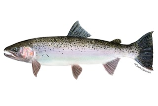
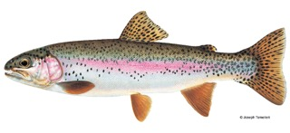
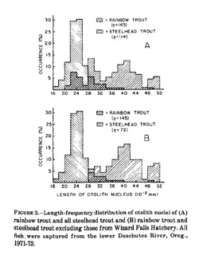
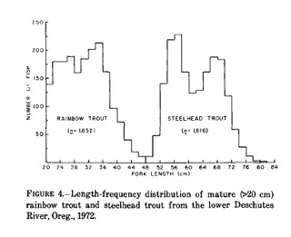
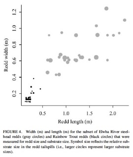
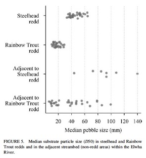

Identifying anadromous and resident-origin rainbow trout juveniles
Question and context
Oncorhynchus mykiss is a species exhibiting partial migration: some individuals are anadromous, completing a marine migration, while resident individuals undergo their life cycle in freshwater. Differentiation of adult anadromous and resident Oncorhynchus mykiss (known as steelhead and rainbow trout, respectively), is straightforward, but distinguishing juveniles of each life-history origin is more challenging due to a lack of morphological difference. This makes it difficult to understand the composition of a population and make management decisions related to migrations and the mixing of different life-history forms.


Plain-words summary
Several ways to distinguish anadromous-origin and resident-origin juvenile trout have been studied. Analysis of otoliths, sensory structures that help fish hear, is one method for determining origin, thanks to size differences and the signatures left by freshwater and seawater during development. Sometimes, genetic analysis can identify the offspring of anadromous versus resident spawners. For small juvenile fish, stable isotopes of carbon and nitrogen can be used to determine maternal origin.
Additionally, characteristics of redds and spawn timing can indicate whether juvenile trout are anadromous- or resident-origin. Anadromous trout typically spawn earlier than resident rainbow trout and produce larger eggs, meaning that their offspring will be larger during the first summer of life. Steelhead are also typically larger-bodied, and use larger gravel substrates and deeper nests corresponding to their body size. Finally, since steelhead generally produce more fry than resident rainbow trout, their spawning areas may contain higher fry densities than those used by resident rainbow trout.
Technical summary
Methods
Otolith analysis
Otolith size
The size of the otolith nucleus, a structure formed during early development, in juvenile rainbow trout can be used to indicate their origin. This hypothesis was tested by Rybock et al (1975), who compared otolith nucleus sizes between juveniles of known origin. They determined that otolith nucleus size reliably differentiates anadromous vs resident-origin rainbow trout. Steelhead otolith nuclei were significantly larger than rainbow otolith nuclei, and otolith nucleus size was not found to change with growth or depend on sex. This study also measured otolith nuclei in relation to body size and egg size to look for correlations. The authors concluded that larger egg size, correlated with larger body size at maturity, in steelhead is likely responsible for the larger otolith nucleus size compared to resident trout offspring.


Otolith microchemistry
Microchemistry of otoliths can also identify juvenile rainbow trout origin, since development in freshwater versus saltwater influences the composition of bone structures. The concentration of strontium is higher in saltwater than in freshwater, so fish spending part of their life cycle in ocean waters generally have higher levels of strontium in their otoliths (Zimmermann et al. 2009). The ratio of strontium to calcium of the natal stream is strongly correlated with the ratio of Sr:Ca in the otoliths of offspring, for both forms of O. mykiss (Donohoe et al. 2008).
The Sr:Ca ratio in the otolith was shown to be effective at differentiating juvenile rainbow trout from anadromous and resident origin (McMillan et al. 2015). Otoliths were collected from O. mykiss fry, with 30 fry known to be steelhead offspring, 28 of unknown origin, and 12 known to be rainbow trout offspring. Steelhead offspring were identified as those individuals with a Sr:Ca ratio significantly higher than that found in known rainbow-trout offspring, and not significantly different from known steelhead offspring, while fry were classified as resident-origin when they had a significantly lower Sr:Ca ratio than known steelhead and no significant difference from known rainbow trout offspring. Zimmerman and Reeves (2002) had similar findings, based on a study in which they reared juvenile trout of anadromous and resident origin and measured Sr:Ca ratios, which were then used to identify unknown juveniles. Again, Sr:Ca was significantly higher in the anadromous-offspring trout.
Genetic methods
There is a “moderate to strong” genetic component to O. mykiss life histories, though more research is needed on the extent and mechanisms of heritibility. Fish displaying each life history can produce offspring with the other life history. However, there appear to be maternal effects: studies have observed offspring of anadromous mothers are more likely to become anadromous, as they reach a larger size than resident offspring, and a higher proportion of resident rainbow trout came from resident mothers (Kendall et al. 2014).
Stable isotope analysis
Carbon stable isotope ratios can be used to distinguish offspring of migratory forms of trout (Briers et al. 2012). Stable isotope analysis is done by sampling muscle tissue from fry and using mass spectrometry to measure isotope ratios. This method proved to be effective for distinguishing offspring of anadromous and resident origin; however, isotope ratios change significantly over time. The distinction in stable isotope ratios diffuses around 6 or 7 months of age, making this technique only suitable for young trout.
Redd characteristics
Inspection of redds is another way to classify offspring of steelhead and rainbow trout, due to the different size, behaviour, and fecundities of the two forms. Using biweekly redd surveys in the Elwha River, McMillan et al (2015) observed significant differences between steelhead and rainbow trout redd size, time of construction, and substrate particle size. Steelhead redds were measured to be both longer and wider than rainbow trout redds; the difference was so substantial that there was no overlap in the ranges of redd sizes, and it could be inferred that redds larger than 0.3 square meters were constructed by steelhead while redds smaller than 0.2 square meters were constructed by rainbow trout.

Median substrate particle size was significantly larger in steelhead redds compared to resident rainbow trout redds. Based on the observations in the Elwha River, redds with media substrate particles greater than 33 mm were made by steelhead, and redds with median particle size less than 30 mm were made by rainbow trout.

Offspring characteristics
Fry density was significantly higher in steelhead spawning reaches than in rainbow trout spawning reaches (McMillan et al. 2015), which can be explained by the higher fecundity of steelhead. Therefore, in reaches with very high fry density, these juveniles may be more likely to be anadromous-origin. Although steelhead generally spawn earlier than rainbow trout, size differences between the offspring of the two forms were not significantly different, so offspring size may not be a reliable indicator of origin.
References
Briers, R.A., Waterman, J.O., Galt, K., and Campbell, N.B. 2012. Population differentiation and temporal changes of carotenoid pigments and stable isotope ratios in the offspring of anadromous and non-anadromous trout Salmo trutta. Ecology of Freshwater Fish 22: 137-144.
Donohoe, C.J., Adams, P.B., and Royer, C.F. 2008. Influence of water chemistry and migratory distance on ability to distinguish progeny of sympatric resident and anadromous rainbow trout (Oncorhynchus mykiss). Canadian Journal of Fisheries and Aquatic Science 65: 1060-1075.
Kendall, N.W., McMillan, J.R., Sloat, M.R., Buehrens, T.W., Quinn, T.P., Pess, G.R., Kuzischin, K.V., McClure, M.M., and Zabel, R.W. 2014. Anadromy and residency in steelhead and rainbow trout (Oncorhynchus mykiss): a review of the processes and patterns. Canadian Journal of Fisheries and Aquatic Science 72: 319-342.
McMillan, J.R., Pess, G.R., Liermann, M., Morley, S.A., McHenry, M.L., Campbell, L.A., and Quinn, T.P. 2015. Using redd attributes, fry density, and otolith microchemistry to distinguish the presence of steelhead and rainbow trout in the Elwha River Dam Removal Project. North American Journal of Fisheries Management 35(5): 1019-1033.
Rybock, J.T., Horton, H.F. and Fessler, J.L. 1975. Use of otoliths to separate juvenile steelhead trout from juvenile rainbow trout. Fishery Bulletin 73(3): 654-659.
Zimmerman, C.E. and Reeves, G.H. 2002. Identification of steelhead and resident rainbow trout progeny in the Deschutes River, Oregon, revealed with otolith microchemistry. Transactions of the American Fisheries Society 131: 986-993.
Zimmerman, C.E., Edwards, G.W., and Perry, K. 2009. Maternal origin and migratory history of steelhead and rainbow trout captured in rivers of the Central Valley, California. Transactions of the American Fisheries Society 138: 280-291.